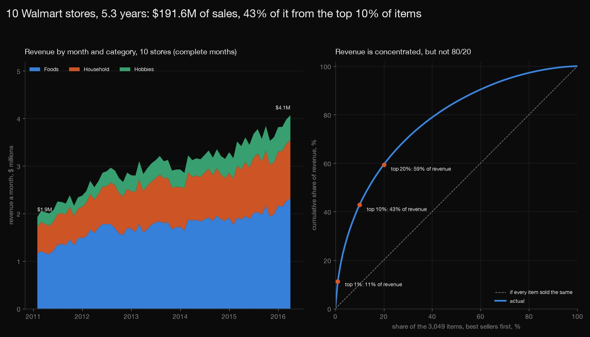
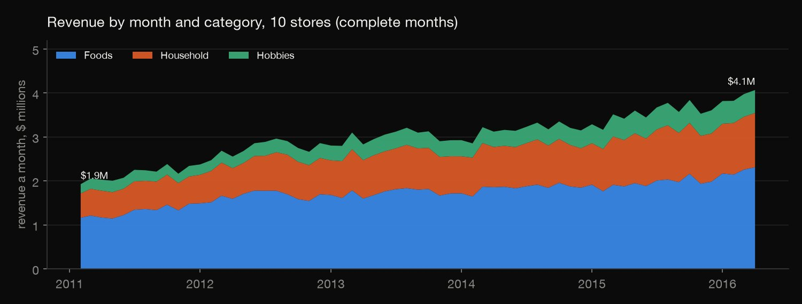
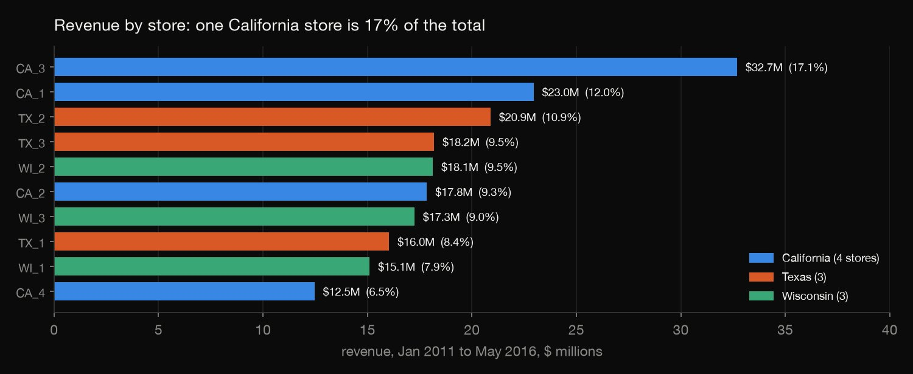
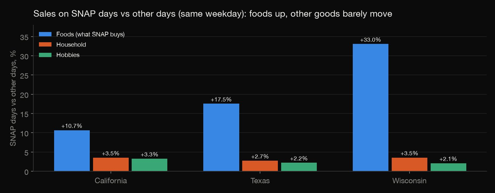
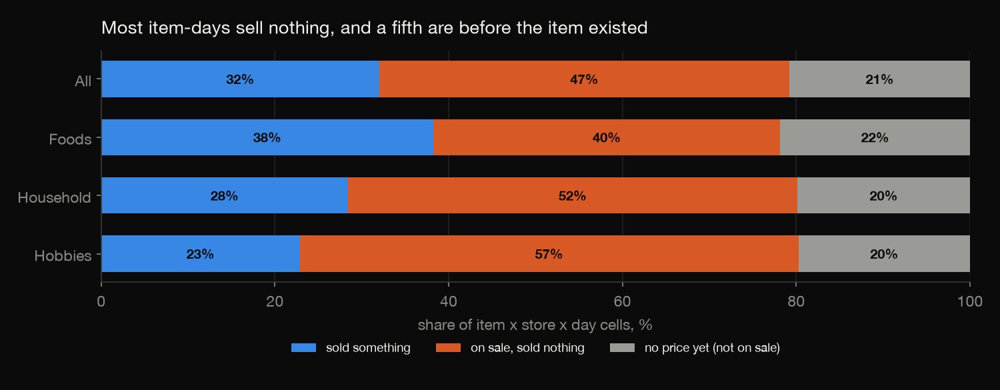
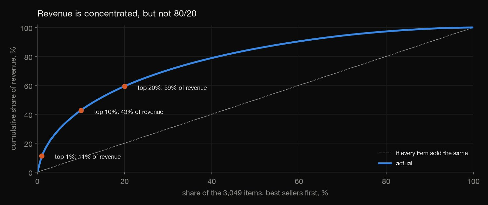

SQL · Retail sales · 2026-10
Where Does Walmart's Revenue Actually Come From?
10 Walmart stores over 5.3 years ($191.6M), analysed in SQL: foods are 58% of revenue, weekends run 21% above an average day, SNAP days lift foods 11% to 33% by state, and 60% of on-sale item-days sell nothing.

This is 10 stores of one retailer in 3 states, Jan 2011 to May 2016, with hashed item names. Revenue = units x the weekly list price: coupons and SNAP tender are not in it and there are no costs, so it is sales, not profit. The SNAP comparison is an association (SNAP days fall early in the month, with paydays). Data: M5 Forecasting dataset, Makridakis Open Forecasting Center and Walmart, via Zenodo (DOI 10.5281/zenodo.12636070), CC BY 4.0.
01 — The problem
A retailer's sales database holds the answers to simple questions that are easy to get wrong. Which days, stores, departments and items earn a big retailer's money, and what do the numbers hide?
The task follows DataCamp's "Analyzing Motorcycle Part Sales" (SQL on a multi-warehouse sales database: revenue by time, product line and location). That database is a course file, so this runs on the M5 competition's real Walmart data: 3,049 items in 10 stores, daily, for 5.3 years.
02 — What I built
One 59-million-row table built in SQL, and ten questions asked of it, each in its own file:
- The table: 1,941 day columns unpivoted to one row per item, store and day, joined to the calendar and the weekly price, money in exact cents.
- Revenue: by month, year, weekday, category, department, state and store.
- Calendar effects: SNAP days by state with the non-food categories as a placebo, and event days.
- Prices and zeros: how often a price changes, and the share of item-days that sell nothing.
- Concentration and traps: the Pareto curve;
check.pyrecounts all 2,151 numbers in plain Python, with no SQL.
03 — How it was built
- 01
Download the Zenodo release
The M5 Forecasting dataset (48 MB zip; CC BY 4.0, checked on the Zenodo record), fetched with a descriptive User-Agent and its md5 verified. Never committed. The 1,941-day sales file is used, not the 1,913-day one.
URL = "https://zenodo.org/api/records/12636070/files/m5-forecasting-accuracy.zip/content" - 02
Unpivot the days and join the prices
The sales file has one column per day.
UNPIVOTturns 30,490 rows x 1,941 columns into 59,181,090 rows, joined to the calendar and to the weekly price. Revenue is units x price in integer cents, so every sum is exact; the price stays empty where the file has none.UNPIVOT (units FOR d IN (COLUMNS('d_\d+'))); - 03
Revenue by time, place and department
A small table of sales per day, department and store (136,000 rows) feeds the month, year, weekday, category, department, state and store questions, each in its own file.
SELECT f.d, s.dept_id, s.cat_id, s.store_id, s.state_id, sum(f.units) AS units, sum(f.rev_c) AS rev_c - 04
SNAP days, events and price changes
SNAP days are compared with other days in the same state, weekday by weekday, and the same is done for the categories SNAP cannot buy, to show how much of a lift is just the calendar. Event days are compared with ordinary days of the same weekday and year; price changes use
LAGover each item's weeks.s1.avg_rev / s0.avg_rev AS raw_ratio, m.matched_ratio, m.matched_units_ratio - 05
Zeros and concentration, then recount without SQL
Each cell is labelled not priced yet, on sale and zero, or sold, and the zero share is taken over priced days only. Items are ranked by revenue for the Pareto curve.
check.pythen streams the raw CSVs in plain Python and recomputes every table: 2,151 numbers.avg((f.price_c IS NULL)::INT) AS share_unpriced, avg((f.price_c IS NOT NULL AND f.units = 0)::INT) AS share_priced_zero, avg((f.units > 0)::INT) AS share_sold,
04 — Results
The business. $191.6M of revenue on 66.9 million units; complete months (February 2011 to April 2016) went from $1.93M to $4.07M a month. Revenue per day grew 10.3%, 5.4% and 12.0% in 2013 to 2015, while units per day changed by +9.2%, -0.4% and +5.4%: in 2014 revenue grew with no growth in units, so that rise was price and mix. (* part year: 2011 starts on 29 January, 2016 ends on 22 May.)
| Year | Revenue | Per day | Per unit |
|---|---|---|---|
| 2011* | $23.9M | $70.9k | $2.70 |
| 2012 | $32.6M | $89.2k | $2.71 |
| 2013 | $35.9M | $98.4k | $2.73 |
| 2014 | $37.9M | $103.7k | $2.89 |
| 2015 | $42.4M | $116.2k | $3.07 |
| 2016* | $18.8M | $131.7k | $3.15 |

The week, categories and departments. Saturday and Sunday run 21% and 21% above the average day, Wednesday 13% below. Foods are 58.0% of revenue (from 60.7% in 2012 to 55.2% in 2015), household 29.8%, hobbies 12.2%. In the table, FOODS_1 outsells HOUSEHOLD_2 in units but earns less, because a unit costs $2.54 against $4.93: the sales file counts units, not dollars.
| Dept | Revenue | Units | $ / unit |
|---|---|---|---|
| FOODS_3 | 37.8% | 49.2% | $2.20 |
| HOUSEHOLD_1 | 22.0% | 17.5% | $3.59 |
| FOODS_2 | 13.4% | 11.6% | $3.28 |
| HOBBIES_1 | 11.5% | 8.5% | $3.88 |
| HOUSEHOLD_2 | 7.8% | 4.5% | $4.93 |
| FOODS_1 | 6.9% | 7.8% | $2.54 |
| HOBBIES_2 | 0.6% | 0.8% | $2.22 |
Stores. CA_3 alone is 17.1% of revenue ($32.7M); CA_4 is the smallest ($12.5M, 6.5%). California has 44.9% of revenue with 4 stores, Texas 28.8% and Wisconsin 26.4% with 3 each.

SNAP days. Taking each state's SNAP days against its other days of the same weekday, foods sell 10.7% more in California, 17.5% in Texas and 33.0% in Wisconsin. Household goods and hobbies, which SNAP cannot buy, move 2.1% to 3.5%: that is the calendar (early-month paydays) alone, so only the gap above it is the SNAP signal. An association, not proof of cause.

Events and prices. Against an ordinary day of the same weekday and year, 25 of the 30 named events are within 15%. The table shows the extremes and a few well known days (index 1.00 = ordinary). Prices rarely move: only 1.17% of 6,658,181 consecutive priced weeks saw a change, by 25% on average. Units rise after cuts (1.20x) but also after rises (1.14x): no elasticity can be read from that.
| Event | Index |
|---|---|
| Labor Day | 1.29 |
| Columbus Day | 1.12 |
| Super Bowl | 0.94 |
| Easter | 0.86 |
| Mother's day | 0.84 |
| New Year | 0.72 |
| Thanksgiving | 0.69 |
| Christmas | 0.00 |
| Price change | Weeks | Units vs before |
|---|---|---|
| Cut 10%+ | 16,869 | 1.20 |
| Cut under 10% | 16,386 | 1.33 |
| Unchanged | 6,580,279 | 1.00 |
| Rise under 10% | 23,895 | 1.18 |
| Rise 10%+ | 20,752 | 1.14 |
Intermittent demand. 68.0% of the 59,181,090 item-store-day cells sold nothing, but 20.8% of the cells come before the item had a price. On priced days 59.6% sold nothing: foods 51.1%, household 64.6%, hobbies 71.5%. 67.4% of series are zero on at least half their priced days, and only 2.0% on under 10%.

Concentration. The top 1% of items (31 items) earn 11.2% of revenue, the top 10% (305 items) 42.8%, the top 20% 59.4%; the bottom half 14.7%. Half of revenue takes 421 items and 80% takes 1,269 (41.6%), milder than the 80/20 rule. Only 53.8% of the top 10% by units are also in the top 10% by revenue.

The traps. Sales are units, so revenue needs the price. And a price exists only from the week an item is first sold: 19,558 of 30,490 series are priced after week 1 (64%), no cell has units without a price, and 30,346 series are priced exactly from their first sale week (144 were priced earlier). Counting those pre-price days as zero sales inflates the zero share from 59.6% to 68.0%. Also: on 25 December 24 of 50 store-days have no sales at all.
05 — What I'd do next
- Forecast the daily sales of these series (an intermittent-demand problem) and test the forecasts against the competition's hidden weeks, in a separate project.
- Add the margin side: the data has prices but no costs, so a profit view needs another source.
- Test the SNAP lift against the schedule of paydays in a state with a different SNAP calendar, to separate benefit from payday timing.